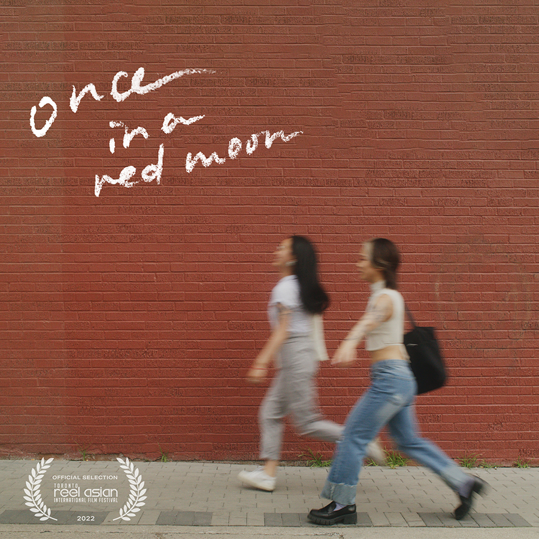
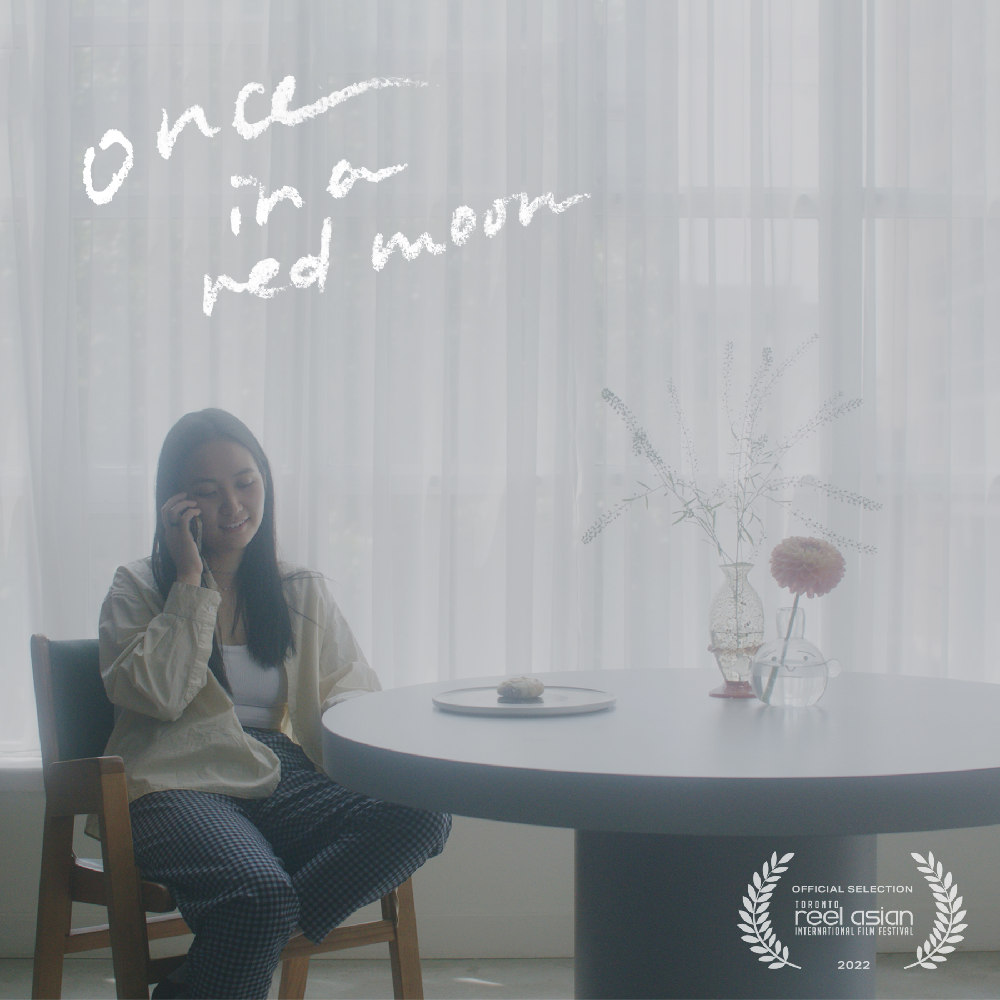

once in a red moon
narrative, 9min, canada, 2022
director, writer, editor.
[synopsis]
As mid-autumn festival approaches, a lonesome young immigrant finds comfort in a whirlwind romance with a mysterious queer crush who seems too good to be true.
[credits]
directed, written, and edited by Yi Shi.
cinematography by Lulu Wei and Alan Peng.
starring Sylvia Wang and Akira Dawn.
featuring original music "Falling" by D Badua.
Full credits in the trailer description.
This very first short film is made possible with the generous support and mentorship
from Toronto Reel Asian International Film Festival's Unsung Voices program, Summer 2022.
[festival selections]
MAR 2024 · Toronto Queer Film Festival, Toronto
OCT 2023 · Inside Out Ottawa 2SLGBTQ+ Film Festival, Ottawa
SEP 2023 · Minikino Film Week: Bali International Short Film Festival, Bali, Indonesia
MAY 2023 · Inside Out Toronto 2SLGBTQ+ Film Festival, Toronto
MAY 2023 · FascinAsian Film Festival, Winnipeg + Calgary
NOV 2022 · Toronto Reel Asian International Film Festival, Toronto [premiere]
[other showcase]
2024 · Metrolinx go transit video on demand, with Reel Asian Unsung Voices
2023 · Shorts in Conversation, with Reel Asian, Toronto


